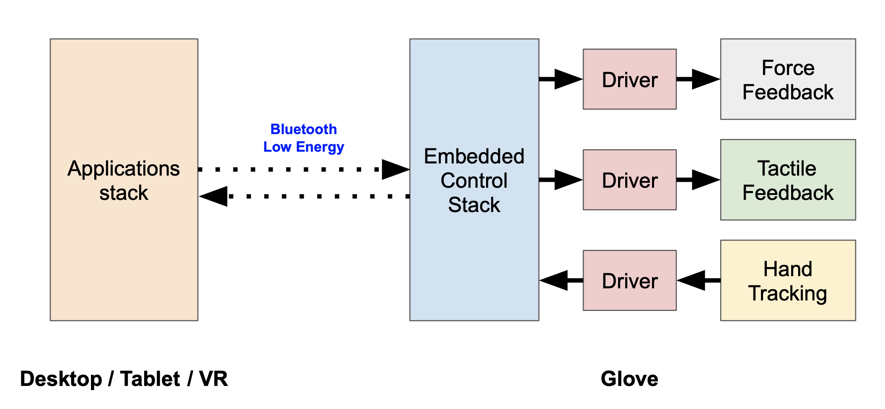

When the glove is released to consumers, we will ensure that it integrates seamlessly into a number of existing applications. We're targetting applications that rely on 3D interactions: CAD programs, video games, VR apps, etc. Users will be able to put on the glove and immediately gain the sensation of touch in their favorite applications, without having to write any code. Things like collision detection and surface modeling will be handled behind the scenes, and users can wander their virtual realms in blissful ignorance.
However, we also plan to open up the glove to third-party developers. As far as these people are concerned, the software stack looks like this: 
In short, the hand sends tracking data to the host, the host detects collisions between the user's hand and some region of virtual space, and the host responds with a specified force and tactile response which the glove then executes. Had I been rigorous in making this graphic, I would have included arrows going both directions between the modules of the glove because, in reality, the data flow is bidirectional. For all three modules of the glove, the designated driver monitors its module's performance and adjusts its parameters to ensure the highest possible performance. The inner workings of the low-level drivers are thrilling to embedded engineers, but pretty mundane to everyone else, so I'm not really going to talk about them here. To someone whose primary concern is programming an application for the glove, such knowledge is not important.
We don't yet have much information on what the glove programming interface will look like. It's unlikely that we'll allow access to the low-level drivers, but the degree to which third-party developers can access the embedded control stack has yet to be decided. There are a few possibilities as to what the final system will look like; any or all of them might be implemented:
-
Drag-and-drop —
In this case, developers will be able to program experiences with the glove using a visual interface. They'll be able to position virtual objects onto which they can drag and drop virtual textures — kind of like Blender or any other animation / modeling software, but with built-in plugins for the glove. The backend code would be generated automatically. This type of interface might be appealing to researchers, whose primary goal is to get something up and running quickly for academic purposes, or to children, who lack intellect.
-
Some in-between thing —
This development environment will be for the common person. He or she who has a bit of a programming background but isn't quite a wizard. Someone like your average first-year CS university student. This environment might look Unity-esque, with a command-line in addition to a visual interface. Programmers might be able to tweak material vibration profiles or the strength of force feedback, but the ultimate decisions regarding the behavior of the glove would be made behind the scenes. Really, it's to protect them from themselves.
- Straight-up embedded SDK — This type of development will require a black belt in embedded software. To those willing to accept the challenge, the reward will be near complete control over the glove. Of course, with great power comes great responsibility. I could see this type of interface being demanded by a studio producing a new video game; they might want to program custom force and tactile behavior to enhance gameplay. I could also see this interface being requested by a very smart child who feels insulted by drag-and-drop interfaces.